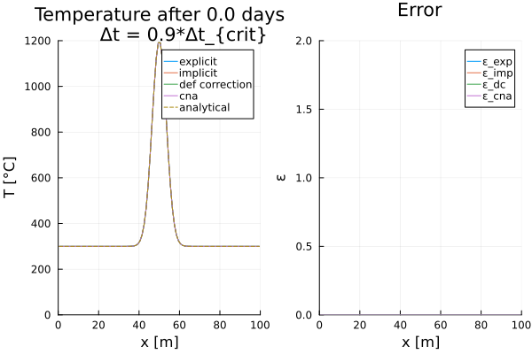
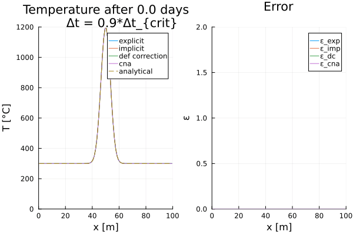

Gaussian Diffusion (1D)
This example illustrates the advantages and disadvantages of different finite difference discretization schemes for solving the 1-D temperature conservation equation. The model assumes constant thermal parameters and neglects adiabatic pressure effects, resulting in a purely diffusive problem.
The following discretization schemes are applied:
- Forward Euler
- Backward Euler
- Crank-Nicolson
- Defect Correction
As initial condition, a Gaussian temperature distribution with a certain width and amplitude is assumed along a 1-D profile. The transient evolution of this temperature distribution can be described analytically, allowing for the calculation of accuracy at each time step by comparing numerical and analytical results. The temperature distribution and error in percent are shown for each time step in a small animation.
For more details regarding the model setup and physics or details on the different numerical discretization schemes, please see the exercises or the documentation.
First one needs to load the required packages:
using Plots, Printf, LinearAlgebra, ExtendableSparse
using GeoModBox.HeatEquation.OneDNow, one needs to define the geometrical and physical constants.
# Physical Parameters --------------------------------------------------- #
L = 100.0 # Length [ m ]
Trock = 300.0 # Background temperature [ C ]
Tmagma = 1200.0 # Dike temperature [ C ]
W = 5.0 # Dike width [m]
κ = 1.0e-6 # Diffusivity [ m²/s ]
# ----------------------------------------------------------------------- #Now, the numerical constants.
# Numerical Parameters -------------------------------------------------- #
nc = 100 # Number of cenroids
Δx = L/nc # Grid spacing
xc = Δx/2:Δx:(L-Δx/2) # Coordinates
# Iterations ---
niter = 10
ϵ = 1.0e-10
# ----------------------------------------------------------------------- #All numerical schemes are solved sequentially for their respective temperature profiles within a shared time loop. Therefore, the time step must satisfy the diffusion stability criterion, which is based on the Forward Euler (explicit) scheme. One can control the absolut time step via the multiplication factor fac.
# Time Parameters ------------------------------------------------------- #
day = 3600.0*24.0 # Seconds per day
tmax = 2.0*365.25*day # Maximum time [ s ]
time = 0.0 # Initilalize time
# Explicit time stability criterion ---
Δtexp = Δx^2/κ/2.0
# Absolut time step ---
fac = 0.9 # Factorisation
Δt = fac*Δtexp # Absolut time step
# Number of time steps ---
nt = ceil(Int,tmax/Δt)
# ----------------------------------------------------------------------- #As initial condition, a Gaussian temperature distribution along the $x$-direction is defined, assuming a certain width $\sigma$ and its peak at the middle of the profile. The initial temperature distribution is assigned to an individual temperature field for each numerical sceheme. The temperature is overwritten at each time step; it is not stored throughout the time loop.
# Initial condition ----------------------------------------------------- #
T = (ini = zeros(nc), ana = zeros(nc))
# Gaussian temperature distribution ---------
σ = 5
xp = L/2.0
@. T.ini = Trock + (Tmagma-Trock)*exp(-((xc-xp)/σ)^2)
# Setting up field memroy ---
explicit = (T = zeros(nc), T_ex = zeros(nc+2), ε = zeros(nc))
implicit = (T = zeros(nc), rhs = zeros(nc), ε = zeros(nc))
dc = (T = zeros(nc), T0 = zeros(nc), T_ex = zeros(nc+2),
∂T2∂x2 = zeros(nc), R = zeros(nc), ε = zeros(nc))
cna = (T = zeros(nc), ε = zeros(nc))
# Assign initial temperature ---
explicit.T .= T.ini
explicit.T_ex[2:end-1] .= explicit.T
implicit.T .= T.ini
dc.T0 .= T.ini
cna.T .= T.ini
# Analytical solution ---
@. T.ana = Trock + (Tmagma-Trock)/(sqrt(1+4*time*κ/σ^2))*
exp(-(xc-xp)^2/(σ^2 + 4*time*κ))
# ----------------------------------------------------------------------- #Now, the thermal boundary conditions.
# Boundary conditions --------------------------------------------------- #
BC = (
type = (W=:Dirichlet, E=:Dirichlet),
#type = (W=:Neumann, E=:Neumann),
val = (W=:300.0,E=:300.0)
)
# ----------------------------------------------------------------------- #For the implicit numerical scheme, one also needs to define the coefficient matrices and the degrees of freedom ndof of the linear system of equations.
# Assemble Coefficient Matrix ------------------------------------------- #
ndof = length(T.ini)
K = ExtendableSparseMatrix(ndof,ndof)
K1 = ExtendableSparseMatrix(ndof,ndof)
K2 = ExtendableSparseMatrix(ndof,ndof)
# ----------------------------------------------------------------------- #To visualize the transient behavior, the temperature profile and the error are stored as a gif.
Note: If one wants to plot the solution for certain time steps the parameter
save_figneeds to be set to 0. This setting does not result in the generation of a gif file and the single plots are not saved!
# Animationssettings ---------------------------------------------------- #
path = string("./examples/DiffusionEquation/1D/Results/")
anim = Plots.Animation(path, String[] )
filename = string("1D_comparison")
save_fig = 1
# ----------------------------------------------------------------------- #
Let's plot the initial condition first.
# Plot initial condition ------------------------------------------------ #
p = plot(xc, explicit.T, label="explicit",
xlabel="x [m]", ylabel="T [°C]",
title="Temperature after $(round(time / day, digits=1)) days
Δt = $(round(Δt / Δtexp, digits=2))*Δt_{crit}",
xlim=(0,L),ylim=(0, Tmagma),layout=(1,2))
plot!(p,xc, implicit.T,label="implicit",subplot=1)
plot!(p,xc, dc.T0,label="def correction",subplot=1)
plot!(p,xc, cna.T,label="cna",subplot=1)
plot!(p,xc, T.ana, linestyle=:dash, label="analytical",subplot=1)
plot!(p,xc, explicit.ε, xlabel="x [m]", ylabel="ε",
title="Error",
label="ε_exp",xlim=(0,L),ylim=(0,2.0),
subplot=2)
plot!(p,xc, implicit.ε, label="ε_imp",subplot=2)
plot!(p,xc, dc.ε, label="ε_dc",subplot=2)
plot!(p,xc, cna.ε, label="ε_cna",subplot=2)
if save_fig == 1
Plots.frame(anim)
else
display(p)
end
# ----------------------------------------------------------------------- #
Figure 1. Initial temperature distribution.
With all parameters defined, the 1-D temperature conservation equation is solved iteratively for each time step using a for loop. Within the time loop, the equation is solved seperately using each of the above mentioned numerical discretization schemes.
If the temperature field is not explicitly updated in the script after calling the solver, the solver is assumed to update it internally.
# Time loop ------------------------------------------------------------- #
for n=1:nt
println("Zeitschritt: ",n,", Time: $(round(time/day, digits=1)) [d]")
# Explicit, Forward Euler ------------------------------------------- #
ForwardEuler1Dc!( explicit, κ, Δx, Δt, nc, BC )
# Implicit, Backward Euler ------------------------------------------ #
BackwardEuler1Dc!( implicit, κ, Δx, Δt, nc, BC, K, implicit.rhs )
# Defection correction method --------------------------------------- #
for iter = 1:niter
# Residual iteration
ComputeResiduals1Dc!( dc, κ, Δx, Δt, BC )
@printf("||R|| = %1.4e\n", norm(dc.R)/length(dc.R))
norm(dc.R)/length(dc.R) < ϵ ? break : nothing
# Assemble linear system
AssembleMatrix1Dc!( κ, Δx, Δt, nc, BC, K )
# Solve for temperature correction: Cholesky factorisation
Kc = cholesky(K.cscmatrix)
# Solve for temperature correction: Back substitutions
δT = -(Kc\dc.R[:])
# Update temperature
dc.T .= dc.T .+ δT
end
# Crank-Nicolson method --------------------------------------------- #
CNA1Dc!( cna, κ, Δx, Δt, nc, BC, K1, K2 )
# Update temperature ------------------------------------------------ #
dc.T0 .= dc.T
# Update time ------------------------------------------------------- #
time = time + Δt
# Analytical Solution ----------------------------------------------- #
@. T.ana = Trock + (Tmagma-Trock)/(sqrt(1+4*time*κ/σ^2))*
exp(-(xc-xp)^2/(σ^2 + 4*time*κ))
# Error ------------------------------------------------------------- #
@. explicit.ε = abs((T.ana-explicit.T)/T.ana)*100
@. implicit.ε = abs((T.ana-implicit.T)/T.ana)*100
@. dc.ε = abs((T.ana-dc.T0)/T.ana)*100
@. cna.ε = abs((T.ana-cna.T)/T.ana)*100
# Plot solution ----------------------------------------------------- #
if n == 1 || n % 5 == 0 || n == nt
# Subplot 1 ---
p = plot(xc, explicit.T, label="explicit",
xlim=(0,L),ylim=(0,1300),
xlabel="x [m]",ylabel="T [°C]",
title="Temperature after $(round(time / day, digits=1)) days
Δt = $(round(Δt / Δtexp, digits=2))*Δt_{crit}",
layout=(1,2))
plot!(p, xc, implicit.T,linestyle=:dash, label="implicit",subplot=1)
plot!(p, xc, dc.T,linestyle=:dash, label="def correction",subplot=1)
plot!(p, xc, cna.T,linestyle=:dash, label="cna",subplot=1)
plot!(p, xc, T.ana, linestyle=:dash, label="analytical",subplot=1)
# Subplot 2 ---
plot!(p,xc, explicit.ε, label="ε_exp",
xlim=(0,L),ylim=(0,2.0),
xlabel="x [m]",ylabel="ε [%]",
title="Error",
subplot=2)
plot!(p, xc, implicit.ε,linestyle=:dash, label="ε_imp",subplot=2)
plot!(p, xc, dc.ε,linestyle=:dot, label="ε_dc",subplot=2)
plot!(p, xc, cna.ε,linestyle=:dash, label="ε_cna",subplot=2)
# Display the plots ---
if save_fig == 1
Plots.frame(anim)
else
display(p)
end
end
end
Figure 2. Temperature evolution and corresponding error for each numerical scheme. exp - Forward Euler, imp - Backward Euler, dc - Defect correction, cna - Crank-Nicolson.
Finally, the plots are compiled into an animation, and individual PNG files corresponding to specific time steps are deleted.
# Speicher Animation ---------------------------------------------------- #
if save_fig == 1
# Write the frames to a GIF file
Plots.gif(anim, string( path, filename, ".gif" ), fps = 15)
else
display(plot(p))
end
foreach(rm, filter(startswith(string(path,"00")), readdir(path,join=true)))
# ----------------------------------------------------------------------- #